소음진동산업기사 (2004-05-23 기출문제)
1과목: 소음진동개론
1. 음의 고저(高低)는 음파의 어떤 성분에 의해 결정되는가?
- 음압
- 주파수
- 음향파워
- 음의세기
(정답률: 알수없음)

2. 어떤 1대의 기계로 부터 발생하는 음을 그 음원으로 부터 일정 거리 떨어진 지점에서 측정하면 65dB 이다. 다음에 동일한 기계 여러대를 동시에 작동시켜 발생된 음을 전과 동일한 거리에서 측정하였더니 72dB 이었다. 이때 동시에 작동시킨 기계의 대수는?
- 4대
- 5대
- 6대
- 7대
(정답률: 알수없음)
3. 음압의 실효치를 P, 공기밀도를 ρ , 전파속도를 C라 할때 음의 세기(I)를 옳게 나타낸 식은?
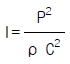
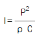
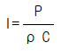
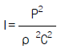
(정답률: 알수없음)
4. 정현진동에서 시간(t)에 대한 변위진폭이 a = A sin ω t로 표시될 때 속도진폭 v 은?(단, A: 변위진폭의 피크치, ω : 각진동수, t: 시간)
- v = Aㆍω sin ω t
- v = A ㆍω cos ω t
- v = Aㆍω2 sin t
- v = A cos ω2t
(정답률: 알수없음)
5. 음파의 굴절에 관한 설명으로 알맞지 않은 것은?
- 파장이 크고 장애물이 작을수록 굴절이 잘된다.
- 대기온도차에 의하여 주간에는 상공으로 굴절한다. (지표부분의 온도가 상공보다 고온)
- 풍속차에 의한 경우 음원보다 상공의 풍속이 클 때 풍하측에서는 지면쪽으로 굴절한다.
- 풍속차에 의한 경우 음원보다 상공의 풍속이 클 때 풍상측에서는 상공으로 굴절한다.
(정답률: 알수없음)
6. 음의 크기가 16sone인 음은 몇 phon인가?
- 약 20
- 약 40
- 약 60
- 약 80
(정답률: 알수없음)
7. 소음을 1/1옥타브밴드로 분석한 중심주파수 500, 1000, 2000[Hz]의 음압레벨의 산술평균치는?
- 소음평가지수
- 감각소음레벨
- 회화방해레벨
- 우선회화방해레벨
(정답률: 알수없음)
8. 출력이 0.1watt인 작은 점음원으로 부터 100m 떨어진 지점에서의 SPL(dB)은? (단, 무지향성, 자유공간에 있는 것으로 가정)
- 59
- 65
- 71
- 78
(정답률: 알수없음)
9. '소음에 의한 시끄러움'에 관한 내용과 가장 거리가 먼것은?
- 충격성이 클수록 시끄럽다.
- 저주파 성분이 많을수록 시끄럽다.
- 배경소음과의 레벨차가 클수록 시끄럽다.
- 소음도가 클수록 시끄럽다.
(정답률: 알수없음)
10. 탄성계수 K인 스프링과 질량 m인 추로 이루어진 비감쇠 진동시(자유진동) 고유진동수 f는? (단, 1자유도 진동계 기준)
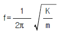
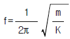
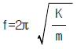
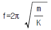
(정답률: 알수없음)
11. 진동에 의한 생체 반응에서 고려할 사항과 가장 거리가 먼 것은?
- 진동의 강도
- 진동수
- 폭로시간
- 공동지수
(정답률: 알수없음)
12. 지향계수가 2.24이면 지향지수는 몇 dB 일까?
- 3.0 dB
- 3.5 dB
- 4.0 dB
- 4.5 dB
(정답률: 알수없음)
13. 진동수가 약간 다른 두 음을 동시에 듣게 되면 합성된 음의 크기가 오르내린다. 이 현상을 무엇이라고 하는가?
- 간섭
- 공진
- 회절
- 맥놀이
(정답률: 알수없음)
14. 원거리음장(far field)에 대한 설명중 틀린 것은?
- 음장내 자유음장에서는 역2승 법칙이 만족된다.
- 음장내 확산음장은 자유음장에 속하며 음의 에너지 밀도가 각 위치에 따라 따르다.
- 입자속도는 음의 전파방향과 개연성이 있다.
- 음장내 잔향음장은 음원의 직접음과 벽에 의한 반사 음이 중첩되는 구역이다.
(정답률: 알수없음)
15. 음압이 각각 10배와 100배로 증가하면 음압레벨은 각각 몇 ㏈증가하는가?
- 20, 30
- 20, 40
- 30, 60
- 30, 90
(정답률: 알수없음)
16. 공기온도 47℃에서 길이가 1.5m인 관의 양단이 열려 있을 때 기본음 공명주파수는 몇 Hz인가?
- 약 1⑤
- 약 110
- 약 115
- 약 120
(정답률: 알수없음)
17. 점음원의 거리감쇠에 대해 다음 중 맞는 것은?
- 거리가 2배가 되면 3 dB 작아진다.
- 거리가 2배가 되면 6 dB 작아진다.
- 거리가 2배가 되면 9 dB 작아진다.
- 거리가 2배가 되면 12 dB 작아진다.
(정답률: 알수없음)
18. 소음에 관한 특징 중 옳지 않는 것은?
- 듣는 사람에 따라 주관적이다.
- 주위에 진정이 많다.
- 축적성이 있다.
- 국소, 다발적이다.
(정답률: 알수없음)
19. 청각기관의 역할에 관한 설명으로 옳지 않는 것은?
- 음의 대소는 자극을 받는 내이의 섬모 위치에 따라 결정된다.
- 이관은 중이의 기압을 조정한다.
- 중이는 이소골에 의해 진동음압을 20배 정도 증폭 하는 임피던스 변환기 역활을 한다.
- 외이도는 일종의 공명기로 음을 증폭한다.
(정답률: 알수없음)
20. 인체의 진동감각에 관한 다음 기술중 틀린 것은?
- 3∼6Hz 부근에서 심한 공진현상을 보여 가해진 진동보다 크게 느낀다.
- 공진현상은 앉아 있을 때가 서 있을 때보다 심하게 나타난다.
- 수직진동에서는 1∼2Hz, 수평진동에서는 2∼4Hz의 범위에서 가장 민감하다.
- 공진현상은 진동수가 증가함에 따라 감쇠가 급격히 증가한다.
(정답률: 알수없음)
2과목: 소음진동 공정시험 기준
21. 진동레벨계의 성능에 관한 설명으로 알맞지 않은 것은?
- 측정가능 진동레벨 범위는 45-120dB 이상이어야 한다
- 측정가능 주파수 범위는 1-90Hz 이상이어야 한다
- 레벨렌지 변환기가 있는 기기에 있어서 레벨렌지 변환기의 전환오차는 0.5dB 이내이어야 한다.
- 지시계기의 눈금오차는 ± 1.0dB 이내이어야 한다.
(정답률: 알수없음)
22. 항공기 소음 측정시 소음계의 동특성 및 청감보정회로의 고정위치는?
- 빠름, A특성
- 느림, A특성
- 빠름, C특성
- 느림, C특성
(정답률: 알수없음)
23. 배출허용기준 진동측정시 진동픽업(pick-up)의 설치를 바르게 설명한 것은?
- 지면이 다져서 굳은 장소에 설치해서는 안된다
- 완충이 충분한 장소에 설치하여야 한다
- 수직방향 진동레벨을 측정할 수 있도록 설치한다
- 수평한 면보다 진동전달률이 높은 경사면에 설치한다
(정답률: 알수없음)
24. 소음환경기준에 정한 도로변지역은 고속도로의 경우, 도로단에서 몇 m 이내의 지역인가?
- 50m
- 100m
- 150m
- 200m
(정답률: 알수없음)
25. 다음표의 a,b항에 맞는 숫자로 배열된 것은?
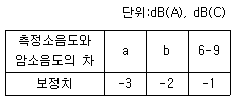
- a : 3 b : 4,5
- a : 2,3 b : 4,5
- a : 3,4 b : 5
- a : 2,3,4 b : 5
(정답률: 알수없음)
26. 공장 배출허용기준의 소음측정 자료는 소수점 몇 째자리에서 반올림하는가?
- 소수점 첫째자리
- 소수점 둘째자리
- 소수점 셋째자리
- 소수점 네째자리
(정답률: 알수없음)
27. 만약 1시간동안에 변동하는 소음레벨이 그림과 같이 처음 30분 동안은 80 dB(A), 다음 30분동안은 70dB(A)이었다면 등가소음도는? (단, 등가소음도 =
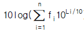
)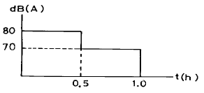
- 77.4 dB(A)
- 78.4 dB(A)
- 79.4 dB(A)
- 80.4 dB(A)
(정답률: 알수없음)
28. 대상진동레벨에 관련시간대에 대한 측정진동레벨 발생시간의 백분율, 시간별, 지역별등의 보정치를 보정한후 얻어진 진동레벨은?
- 평가진동레벨
- 대상진동레벨
- 측정진동레벨
- 보정진동레벨
(정답률: 알수없음)
29. 도로교통소음에 관한 내용으로 알맞지 않은 것은?
- 소음변동이 적은 평일에 소음을 측정한다
- 소음도 기록기를 사용할 경우 샘플주기는 5초이내에서 결정하고 1시간 이상 측정한다
- 소음도 기록기를 사용할 경우 기록지상의 지시치가 변동이 없을 때에는 그 지시치를 측정소음도로 한다
- 소음도 기록기를 사용할 경우 기록지상의 지시치의 변동폭이 5dB(A)이내일 때에는 구간내 최대치 10개를 산술평균한 소음도를 측정소음도로 한다.
(정답률: 알수없음)
30. 다음중 측정하고자 하는 소음도가 지시계기의 범위내에 있도록 하기 위한 감쇠기는?
- 레벨렌지 변환기
- 동특성 조절기
- 청감보정 회로
- 증폭기
(정답률: 알수없음)
31. 당해 측정지점에서의 항공기 소음을 대표할 수 있는 시기가 선정되면 얼마간 연속 측정하는가?
- 5일 연속
- 7일 연속
- 10일 연속
- 15일 연속
(정답률: 알수없음)
32. 디지탈 소음자동 분석계를 사용하여 공장배출소음(배출 허용기준 측정)을 측정할 때 샘플주기는 얼마 이내에서 결정하여야 하는가?
- 5초
- 1초
- 0.5초
- 0.1초
(정답률: 알수없음)
33. 소음진동공정 시험방법의 용어의 정의중 [지시치]를 바르게 설명한 것은?
- 환경기준이나 규제기준의 지시치를 말한다.
- 정부에서 목표로 하는 소음도를 말한다.
- 계기나 기록지상에서 판독한 소음도로서 실효치를 말한다.
- 공장이나 사업장의 소음을 일정수준 유지하도록 정한 소음도를 말한다.
(정답률: 알수없음)
34. 소음계의 측정감도 교정시 발생음의 오차는 몇 ㏈ 이내여야 하는가?
- ± 0.1 ㏈
- ± 0.5 ㏈
- ± 1 ㏈
- ± 5 ㏈
(정답률: 알수없음)
35. 진동레벨계의 구조별성능에 관한 설명으로 틀린 것은?
- 교정장치는 진동측정기의 감도를 점검 및 교정하는 장치로서 자체에 내장되어 있거나 분리되어 있어야한다.
- 진동픽업은 지면에 설치할 수 있는 구조로서 진동 신호를 전기신호로 바꾸어 주는 장치를 말하며, 환경 진동을 측정할 수 있어야 한다.
- 지시계기(지침형)의 유효지시범위는 10dB이상이어야 하며 각각의 눈금은 1dB이하를 판독할 수 있어야 한다
- 출력단자는 진동신호를 기록기 등에 전송할 수 있는 교류출력단자를 갖춘 것이어야 한다.
(정답률: 알수없음)
36. 항공기 소음 측정시 원추형 상부공간 내에는 장애물이 있으면 안되는데 이때 원추형 상부공간이란 측정 위치를 지나는 지면 또는 바닥면의 법선에 반각 몇도의 선분이 지나는 공간을 말하는가?
- 10°
- 45°
- 80°
- 90°
(정답률: 알수없음)
37. [열차통과시마다 최고진동레벨이 배경진동레벨보다 최소 ( ① )이상 큰 것에 한하여 연속( ② )열차(상하행포함) 이상을 대상으로 최고진동레벨을 측정,기록하고,그중 중앙값 이상을 산술평균한 값을 철도진동레벨로 한다.] ( )안에 알맞는 내용은? (단, ①-② 순서 )
- 5dB(V) 이상 - 5개
- 5dB(V) 이상 - 10개
- 10dB(V) 이상 - 5개
- 10dB(V) 이상 - 10개
(정답률: 알수없음)
38. 당해지역에서 소음을 대표할 수 있는 낮시간대는 2시간 간격을 두고 1시간씩 2회 측정하여 산술평균하며 밤시간 대는 1회 1시간 동안 측정하는 소음은?
- 철도소음
- 도로소음
- 건설소음
- 항공기소음
(정답률: 알수없음)
39. 항공기소음을 측정하기 위해 하루중 항공기의 등가통과 횟수를 구하는 식으로 옳은 것은?(단, N1: 0시에서 07시까지, N2: 07시에서 19시까지 N3: 19시에서 22시까지, N4: 22시에서 24시까지 )
- N1+2N3+10(N2+N4)
- N2+2N3+10(N1+N4)
- N1+3N3+10(N2+N4)
- N2+3N3+10(N1+N4)
(정답률: 알수없음)
40. 다음중 발파소음의 측정소음도로 옳은 것은?(단, 소음도기록기를 사용할 경우)
- 5분동안 측정한 최고치 10개의 기하평균
- 5분동안 측정한 L10레벨
- 발파시에 측정한 소음도의 최고치
- 발파시간동안 측정한 최고치 2개이상의 산술평균
(정답률: 알수없음)
3과목: 소음진동방지기술
41. 주어진 조화진동운동이 9cm의 변위진폭, 2초의 주기를 가지고 있다면 최대진동속도는?
- 14.2 cm/s
- 28.3 cm/s
- 36.6 cm/s
- 42.9 cm/s
(정답률: 알수없음)
42. 흡음기구의 종류와 흡음영역에 관한 설명으로 적절치 않은 것은?
- 다공질형 흡음 : 중ㆍ고음역에서 흡음성이 좋다
- 판진동형 흡음 : 80 ~ 300Hz 부근에서 최대 흡음율 0.2 ~ 0.5를 나타낸다
- 막진동형 흡음 : 배후공기층이 클수록 흡음영역이 고음역으로 이동한다
- 공명형 흡음 : 일반적으로 저음역에서 흡음성이 좋다
(정답률: 알수없음)
43. 진동수가 30Hz, 속도진폭의 최대값이 0.03cm/s의 정현 진동일 때 가속도의 최대값은 몇 cm/s2인가?
- 5.65 × 10-1cm/s2
- 5.65 × 10° cm/s2
- 5.65 × 101cm/s2
- 5.65 × 102cm/s2
(정답률: 알수없음)
44. 힘의 전달률(TR)이 1이 되는 경우에 진동수비의 값은? (단, 부족감쇠 강제진동 기준)
- 1
- √2
- 1/√2
- 2
(정답률: 알수없음)
45. 면밀도 7.5kg/m2인 벽에 1000Hz 순음이 통과할 때 투과 손실은? (단, 질량법칙이 만족하는 영역에서 음파가 벽면에 수직 입사할 때)
- 30dB
- 35dB
- 40dB
- 45dB
(정답률: 알수없음)
46. 다음중 기류음(공기음)대책으로 볼수 없는 것은?
- 유속저감
- 가진력 억제
- 관의 곡율완화
- 밸브의 다단화
(정답률: 알수없음)
47. 다음중 방진대책에 사용되는 방진재료와 유효고유진동수의 연결이 적절치 못한 것은?
- 금속 코일스프링 - 4 Hz 이하
- 방진고무 - 4 Hz 이상
- 콜크 - 40 Hz 이상
- 펠트 - 1 Hz 이하
(정답률: 알수없음)
48. 다음중 흡음덕트형 소음기의 소음저감특성에 관한 내용이 아닌 것은?(단, λ : 파장(m), D : 덕트내경(m), L : 덕트길이(m), r : 덕트반경(m))
- 감음특성은 중ㆍ고음역에 탁월하다.
- 최대감음주파수는(λ/2)＜D＜λ 이다.
- 각 흐름통로의 길이는 그것의 가장 큰 횡단길이의 5배는 되어야 한다.
- 통과유속은 20m/sec이하로 하는 것이 좋다.
(정답률: 알수없음)
49. 어떤 진동계에 있어서 고유진동수와 가진력의 진동수가 같을 때 발생하는 현상은?
- 공진현상
- 강제진동현상
- 감쇠현상
- 자유진동현상
(정답률: 알수없음)
50. 공장소음 방지대책의 진행순서로 가장 적당한 것은?
- 방지기술선정→ 계기로 측정→ 대책의 목표설정→ 귀로 판단→ 시공 및 반성
- 대책의 목표설정→ 방지기술선정→ 계기로 측정→ 시공 및 반성 → 귀로판단
- 귀로판단→ 계기로 측정→ 대책의 목표설정→ 방지 기술 선정→ 시공 및 반성
- 계기로 측정→ 방지기술선정→ 대책의 목표설정 → 시공 및 반성→ 귀로판단
(정답률: 알수없음)
51. 진동원에서 발생한 진동이 지반을 전파하는 파동중 진동 전파속도가 가장 빠른 것은?
- S파
- R파
- P파
- V파
(정답률: 알수없음)
52. 방진재중 공기스프링의 단점이라 볼 수 없는 것은?
- 압축기등 부대시설이 필요하다.
- 구조가 복잡하고 시설비가 많다.
- 사용진폭이 적은 것이 많으므로 별도의 댐퍼가 필요한 경우가 많다.
- 하중 변화에 따른 고유진동수를 일정하게 유지하기 어렵다.
(정답률: 알수없음)
53. 작업장의 크기가 25m× 12m× 4m(높이)이며 500㎐ 옥타브 대역에서 벽, 천정, 바닥의 흠음계수가 각각 0.25, 0.⑤, 0.1 이다. 이 때 실내의 잔향시간은?
- 0.4초
- 0.8초
- 1.2초
- 1.6초
(정답률: 알수없음)
54. 어느 벽체의 투과손실값이 32dB이라면, 이 벽체의 투과율 (τ )은 얼마인가?
- 3.3×10-4
- 4.3×10-4
- 5.3×10-4
- 6.3×10-4
(정답률: 알수없음)
55. 스프링과 질량으로 구성된 진동계에서 스프링의 정적처짐이 2cm이었다면 이 계의 주기는 얼마인가?
- 0.14sec
- 0.28sec
- 0.36sec
- 0.52sec
(정답률: 알수없음)
56. 투과손실 10dB의 창 5m2와 투과손실 20dB의 콘크리트벽 45m2으로 구성되어 있는 벽체의 총합투과손실은?
- 16.2 dB
- 17.2 dB
- 18.2 dB
- 19.2 dB
(정답률: 알수없음)
57. 평균흡음율 0.04인 방안에 소음원이 있고, 음원에서 충분히 멀리 떨어진 곳의 실내평균 음압레벨은 90dB이었다. 그 벽면전체를 흡음처리하여 평균흡음율을 0.3으로 했다. 같은 곳에서의 음압레벨은 약 몇 dB되는가?
- 78
- 81
- 84
- 87
(정답률: 알수없음)
58. 다음중 영율이 35N/cm2일 때 방진고무의 동적배율은?
- 1.1
- 1.2
- 1.3
- 1.6
(정답률: 알수없음)
59. 확장계수 M.F(magnification factor)는 다음 어느 식으로 표현되는가? (단, Fo = 외력, k = 스프링계수, x(ω ) = 진동변위)
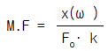
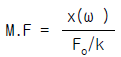
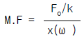
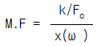
(정답률: 알수없음)
60. 방음벽의 길이가 높이의 몇배 이상이면 길이의 영향을 고려 하지 않아도 되는가? (단, 점음원 기준)
- 2배
- 3배
- 4배
- 5배
(정답률: 알수없음)
4과목: 소음진동방지기술
61. [ 제작중에 있는 자동차의 제작차소음허용기준 적합여부를 확인하기 위하여 ( )를(을) 참작하여 일정기간 마다 실시 하는 검사를 정기검사라 한다 ] ( )안에 알맞는 내용은?
- 자동차 제작년도
- 제작라인별로 제작기간
- 자동차의 종류별로 제작대수
- 제작시기별로 제작방법
(정답률: 알수없음)
62. 배출시설에 대한 개선명령을 받고 동시설을 개선하고자 할때의 개선기간으로서 최대기간은? (단, 연장기간 포함)
- 3년
- 2년
- 1년 6월
- 1년
(정답률: 알수없음)
63. 2002년 1월 1일이후에 제작되는 경자동차의 경적소음 허용기준은?
- 100 dB이하
- 1⑤ dB이하
- 110 dB이하
- 115 dB이하
(정답률: 알수없음)
64. 이동 소음의 원인을 야기하는 기계ㆍ기구(이동 소음원)의 종류가 아닌 것은?
- 행락객이 사용하는 음향기계 및 기구
- 이동하며 영업을 하기 위하여 사용하는 확성기
- 음향 장치를 부착하여 운행하는 이륜자동차
- 집회ㆍ시위시 사용하는 확성기
(정답률: 알수없음)
65. [제작차 소음허용기준에 적합하지 아니하게 자동차를 제작한 자]에 대한 벌칙기준으로 적절한 것은?
- 1년 이하의 징역 또는 500만원이하의 벌금
- 2년 이하의 징역 또는 1000만원이하의 벌금
- 3년 이하의 징역 또는 1500만원이하의 벌금
- 5년 이하의 징역 또는 2000만원이하의 벌금
(정답률: 알수없음)
66. 제작차 소음허용기준의 결정시에 배출 특성이 참작되는 소음의 종류가 아닌 것은?
- 주행소음
- 가속주행소음
- 배기소음
- 경적소음
(정답률: 알수없음)
67. 다음의 조건하에서 환경소음 기준으로 적절한 것은? [ 도로변 지역, 밤, 나지역 ]
- 50LeqdB(A)
- 55LeqdB(A)
- 60LeqdB(A)
- 65LeqdB(A)
(정답률: 알수없음)
68. 공항주변 인근지역외 기타지역의 항공기소음의 한도는? (단, 항공기소음영향도(WECPNL) 기준)
- 70
- 80
- 90
- 100
(정답률: 알수없음)
69. 특정공사의 사전신고대상 기계,장비의 종류가 아닌 것은?
- 병타기
- 로울러
- 콘크리트 펌프
- 압입식 항타항발기
(정답률: 알수없음)
70. 생활소음규제기준 적용시 실외에 설치한 확성기의 사용 기준으로 적절한 것은?
- 1회 2분 이내, 15분 이상의 간격을 두어야 한다
- 1회 3분 이내, 15분 이상의 간격을 두어야 한다
- 1회 5분 이내, 30분 이상의 간격을 두어야 한다
- 1회 10분 이내, 30분 이상의 간격을 두어야 한다
(정답률: 알수없음)
71. [환경관리인을 임명하지 아니한 자]에 대한 벌칙으로 적절한 것은?
- 100만원 이하의 벌금
- 200만원 이하의 벌금
- 6월 이하의 징역 또는 200만원 이하의 벌금
- 1년 이하의 징역 또는 500만원 이하의 벌금
(정답률: 알수없음)
72. 환경관리인이 받아야 할 교육기간에 대하여 맞는 것은?
- 2년마다 1회이상
- 3년마다 1회이상
- 4년마다 1회이상
- 기간에 관계없이 1회이상
(정답률: 알수없음)
73. 소음ㆍ진동규제법에서 실현하고자 하는 목적으로서 “ 생활환경” 을 가장 적절히 표현한 것은?
- 건강하고 쾌적한 생활환경
- 정온한 생활환경
- 청결한 생활환경
- 건전하고 쾌적한 생활환경
(정답률: 알수없음)
74. 다음 조건에서 생활소음 규제기준으로 적절한 것은? [ 주거지역, 공사장, 낮, dB(A) ] (단, 2008년 12월 31일 까지의 기준)
- 55 이하
- 60 이하
- 65 이하
- 70 이하
(정답률: 알수없음)
75. 소음배출시설(마력기준 시설 및 기계,기구)의 범위 기준으로 틀린 것은?
- 30마력이상의 압축기
- 30마력이상의 변속기
- 50마력이상의 공작기계
- 50마력이상의 압연기
(정답률: 알수없음)
76. [환경관리인등의 교육을 받게 하지 아니한 자]에 대한 행정처분으로 적절한 것은?
- 30만원이하의 과태료
- 50만원이하의 과태료
- 100만원이하의 과태료
- 100만원이하의 벌금
(정답률: 알수없음)
77. 소음진동규제법상 방음시설과 가장 거리가 먼 것은?
- 흡음장치 및 시설
- 소음기
- 방음내피시설
- 방음덮개시설
(정답률: 알수없음)
78. 다음 중 소음진동규제법에서 사용하는 용어의 정의 중 [교통기관]에 해당되지 않는 것은?
- 기차
- 항공기
- 전차
- 철도
(정답률: 알수없음)
79. 공장소음,진동 배출허용기준으로 알맞은 것은?
- 평가소음도 40dB(A)이하, 평가진동레벨 50dB(V)이하
- 평가소음도 45dB(A)이하, 평가진동레벨 55dB(V)이하
- 평가소음도 50dB(A)이하, 평가진동레벨 60dB(V)이하.
- 평가소음도 55dB(A)이하, 평가진동레벨 65dB(V)이하
(정답률: 알수없음)
80. 매년 시ㆍ도지사는 주요 소음ㆍ진동관리시책에 관한 보고서를 환경부장관에게 제출하는데 보고서 내용에 포함될 내용이 아닌 것은?
- 소요재원의 확보계획
- 소음ㆍ진동의 행정지원 및 단속 실적
- 소음ㆍ진동 발생원 및 소음ㆍ진동현황
- 소음ㆍ진동 저감대책 추진실적 및 추진계획
(정답률: 알수없음)